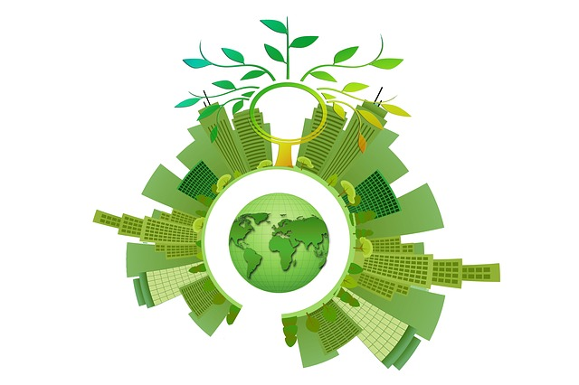
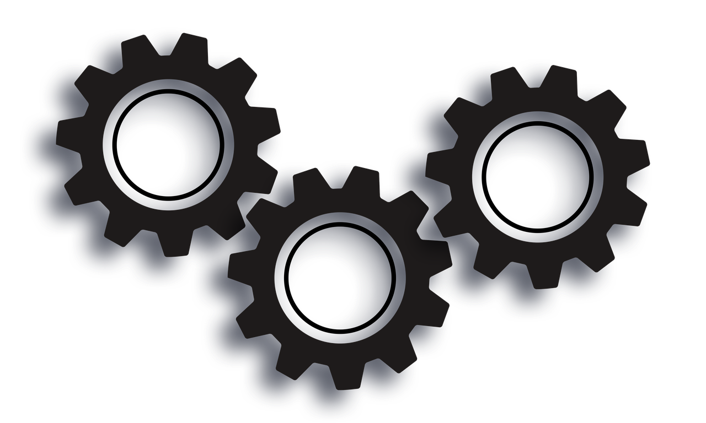

Motivation 
Wir leben in einer Welt im Wandel. Wohin man auch blickt, die Zeichen stehen auf Umbruch. Weg
von den Plastikverpackungen, weg von den fossilen Kraftstoffen, weg von nicht erreichten Klimazielen. Weg von der
"und nach mir die Sintflut" Einstellung, die die Menschheit jetzt lange Zeit
vor sich hergetragen hat. Und das ist gut so.
REWE hat diese Zeichen ebenso erkannt, und hat bei einer Neuausrichtung ihres Online
Angebots bewusst großes Augenmerk auf die Förderung und Erleichterung einer nachhaltigen Lebensweise gelegt. So trägt REWE, durch die
Bereitstellung einer für alle zugänglichen Plattform, die es ermöglicht so wenig Nahrung wie möglich zu verschwenden, ihren
Teil zu einer nachhaltigen und bewussten Lebensweise bei.
Für die Zukunft.
Fortschritt 
Eine wichtige Eigenschaft von WasDaIs(s)t ist es, möglichst lebendig zu bleiben. Es will mehr als nur ein Kochbuch sein.
Es will dir neues Zeigen. Ein Kochbuch nützt sich ab, irgendwann hat man alles (zumindest was dem Geschmack entspricht) probiert. Man
kauft sich ein neues, und der Kreislauf beginnt von vorne. Mit WasDaIs(s)t wird diese Schleife durcbrochen, da sich dank der aktiven Community
ständig neuer Inhalt entwickelt.
Dabei kannst du helfen. Wann immer du bemerkst, dass du ein fabelhaftes Rezept kennst, dass sich noch nicht auf dieser Seite wiederfindet,
kannst du dein Wissen teilen. Lass mehr Menschen am fabelhaften Gemüsestrudel deiner Großmutter teilhaben, und trage damit ganz nebenbei zu
einer besseren Zukunft bei.
Falls das noch nicht genug Anreiz ist, deine seit Generationen weitergegebenen Rezepte zu teilen: ab einem
gewissen Bekanntheitsgrad wirst du dafür auch mit Barem belohnt.
Über Uns
Das Was-Da-Is(s)t Team ist Teil der Firma Taylorsoft, die von Rewe für dieses Projekt beauftragt worden ist.
Sie hat sich auf die Entwicklung von Individualsoftware für mittelgroße bis große Unternehmen spezialisert, daher auch der Name. Taylorsoft wurde
wurde 2009 gegründet und blickt nunmehr auf langjährige Erfahrung sowie eine Vielzahl begeisterter Kunden zurück.
Im Namen der Firma hoffen wir, dass auch du viel Freude mit dem gelieferten Produkt hast. Viel Spaß beim kochen!